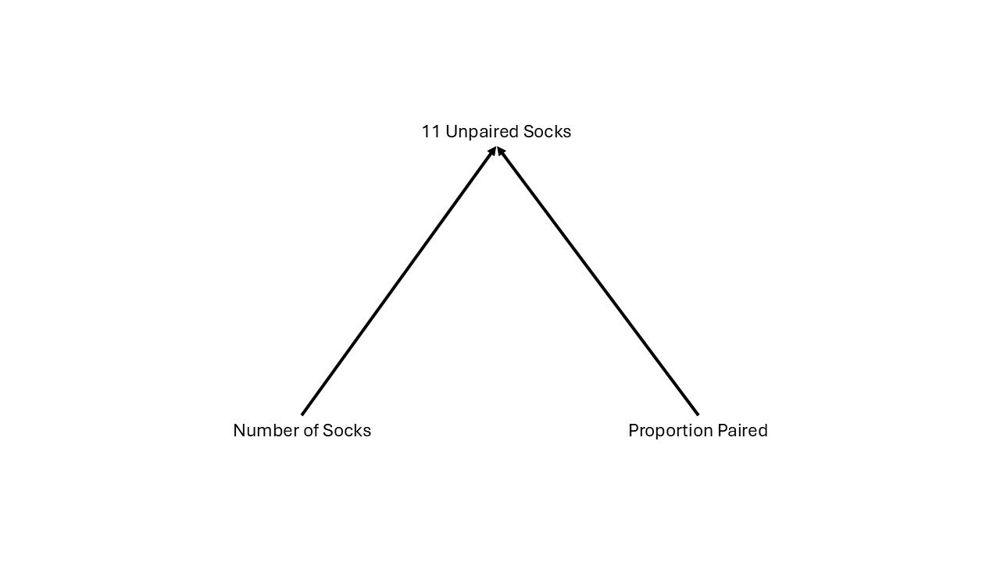
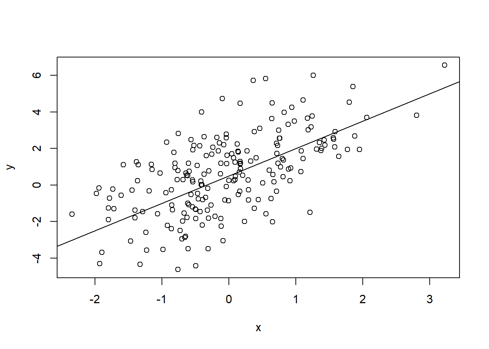

pick_11_socks <- function(n_socks, prop_pairs){
n_pairs <- round(floor(n_socks / 2) * prop_pairs)
n_odd <- n_socks - n_pairs * 2
# Simulating picking out n_picked socks
socks <- rep(seq_len(n_pairs + n_odd), rep(c(2, 1), c(n_pairs, n_odd)))
picked_socks <- sample(socks, size = min(n_picked, n_socks))
sock_counts <- table(picked_socks)
# Returning the parameters and counts of the number of matched
# and unique socks among those that were picked out.
c(unique = sum(sock_counts == 1), pairs = sum(sock_counts == 2),
n_socks = n_socks, n_pairs = n_pairs, n_odd = n_odd, prop_pairs = prop_pairs)
}This is the beginning of the Bayes sequence for the semester
We will work on bayesian analysis for the next four meetings. The topics are:
Introduction to and motivation for baysian data analysis.
We will introduce the main process for constructing and analyzing bayesian models.
Introduction to Stan
We will gain experience utilizing Stan to approximate posteriors for our quantities of interest. We will do this using the familiar linear model.
Hierarchical models in Stan
We continue building experience with Stan through the development of a hierarchical model estimating growth rates in plants using an exponential growth model.
Bring your own data, build your own model
The final meeting of the bayes sequence will be an open work space where you bring data that you want to analyze (or may have already analyzed) and build a model to run in Stan!
Why Bayesian analysis?
(What is Bayesian analysis?)
Bayesian modeling accounts for uncertainty in all observed and unobserved quantities in our model. We do this by explicitly specifying probabilities which allows us to quantify uncertainty in our inferences.
This leads to what I see as two big advantages for applied researchers.
1. A straightforward approach to answering our questions of interest.
Let’s look at Bayes’ rule:
\[ Pr( \boldsymbol{\theta} \mid data) = \frac{Pr(data\mid \boldsymbol{\theta})Pr(\boldsymbol{\theta})}{\Pr(data)} \tag{1}\]
\(Pr(data)\) is the marginal probability of seeing the data, and except for the simplest cases, it is not possible to calculate, so we will cheat and ignore it. Since it is just a constant, we can write this as:
\[ Pr(\boldsymbol{\theta}\mid data) \propto Pr(data\mid\boldsymbol{\theta})Pr(\boldsymbol{\theta}) \tag{2}\]
i.e.:
\[ Posterior \propto Likelihood \times Prior \tag{3}\]
The \(Likelihood\) is the same that we use with our familiar maximum likelihood approaches. Look at equation 2 and see that this is the probability of the data given a set of parameters. Maximum likelihood is finding the set of parameters that maximizes the likelihood of getting our set of data. There are a couple problems with this:
- I don’t care about the set of parameters that maximizes the likelihood of seeing the data, I collected the data to test my scientific theories as encoded by the parameters, I want to know what the probability of my hypothesis is given the data I collected. For that we need the \(Posterior\).
- This is only logical if all possible parameter values are equally likely. The logic is that the if we find the parameters that maximize our likelihood of getting this data-set, they are the most likely parameters. This may be the case, but it it depends on the \(Prior\) probability of the parameters. This logic leaves us open to base rate neglect (aka the prosecutor’s fallacy). For a book-length diatribe see Audrey Clayton’s “Bernoulli’s Fallacy”
So Bayes allows us to actually answer the questions we collected the data for.
2. It provides a principled model-based approach regardless of the question or complexity
For any model we would like to ask questions about, from something as simple as estimating the mean and variance of a data-set to genomic prediction with 100s of thousands of parameters, we use the same approach. (I am stealing this verbatim from Gelmen et al.’s “Bayesian Data Analysis”)
- Setting up a full probability model—a joint probability distribution for all observable and unobservable quantities in a problem. The model should be consistent with knowledge about the underlying scientific problem and the data collection process.
- Conditioning on observed data: calculating and interpreting the appropriate posterior distribution—the conditional probability distribution of the unobserved quantities of ultimate interest, given the observed data.
- Evaluating the fit of the model and the implications of the resulting posterior distribution: how well does the model fit the data, are the substantive conclusions reasonable, and how sensitive are the results to the modeling assumptions in step 1? In response, one can alter or expand the model and repeat the three steps.
To see how this works in practice. Let’s do a (hopefully) fun example together (stolen in it’s entirety from Rasmus Baath, see link below)!
The case of Karl Broman’s Socks
Karl Broman is doing laundry and pulls out the first 11 socks from the dryer. He pulls out 11 unique socks! The question: How many socks are in the dryer? Additionally, we can ask how many pairs and how many singletons. This is a tiny data-set, only 1 observation of 11 socks, but we know the 3 steps we need to get an answer.
Set up a full probability model
Let’s start by drawing a diagram (specifically a directed acyclic graph (d’ya like dags?)) of the model. Our observed quantity is the 11 socks. Our unobserved quantities: how many socks in the dryer, how many pairs, how many singletons. The dag might look like this:

This is all we need to write out our full model! I’m going to use the convention that solid lines are stochastic relationships and dashed lines are deterministic. Quantities at the heads of arrows are influenced by those at the tails. Any parent-less quantities (no arrows come into it), with the exception of data that are measured without error, need priors. Let’s call number of socks \(N\), and proportion paired \(prop_p\) and the data \(y\)—for simplicity. So our full probability model is:
\[ \begin{align*} Pr(N,\space prop_p\mid y) &\propto Pr(y\mid N, \space prop_p) \\ &\times Pr(N) \\ &\times Pr(prop_p) \end{align*} \]
\(Pr(y\mid N, \space prop_p)\), the likelihood, is a tough one, but luckily we can use Approximate Bayesian Computation (ABC) and we don’t need a specific likelihood as long as we can define the relationship and simulate from that. Here is an R function to do that:
Ok, we have a way to simulate picking 11 socks for a given \(N\) and \(prop_p\). Now we need prior distributions for these unobserved parameters. This is a situation where we have tiny data, so we can’t afford to use priors with little information, we need to try to make fairly informative priors. Luckily we have some lived experience with socks, so let’s get a prior distribution for the number of socks. We need to:
- Pick the distributions:
- \(N\) remember, socks come in discrete (well usually), positive values (can’t have negative socks).
- \(prop_p\) is a proportion so: \(0 \leq prop_p \leq 1\)
- Pick the parameters: find parameters for the chosen distributions that give an informative distribution that still accounts for our uncertainty.
- Hint: \(\mu\) in \(Beta(x\mid\alpha,\beta)\) is \(\frac{\alpha}{\alpha+\beta}\)
- Hint: The negative binomial function in
Rcan be parameterized as \(\mu\) and \(size=\frac{\mu}{\sigma^2 - \mu}\)
Discuss and play around with distributions in R until you are happy with your choice of priors!
Ok, now we have our full probability model: (note to Josh replace the priors below when they are chosen)
\[ \begin{align*} Pr(N,\space prop_p\mid y) &\propto Pick11Socks(y\mid N,\space prop_p) \\ &\times Pr(N) \\ &\times Pr(prop_p) \end{align*} \]
We have a full probability model for our problem! Now we need to introduce it to our data.
Condition our model on our (well, Karl Broman’s) observation
For this example we will use Approximate Bayesian Computation to approximate the posterior. This uses 3 steps.
- Simulate a set of parameters from the prior distribution(s)
- Using the simulated parameters simulate a data-set
- If the simulated data-set is sufficiently(what sufficiently means here is a little arbitrary and affects the efficiency of the algorithm) close to the observed data-set, keep the parameter values, otherwise discard.
- Repeat steps 1:3 many, many times.
Ok Step 1: Simulate parameters from the priors, let’s run our algorithm a hundred thousand times and: Step 2: Simulate fake data and compare to the real data. We do this for every set of parameters. Our pick_11_socks function does this for us and returns a T/F for every set of parameters.
# n_picked <- 11 # The number of socks to pick out of the laundry
#
# sock_sim <- replicate(100000, {
# # Generating a sample of the parameters from the priors
# prior_mu <- 30
# prior_sd <- 15
# prior_size <- prior_mu^2 / (prior_sd^2 - prior_mu)
# n_socks <- rnbinom(1, mu = prior_mu, size = prior_size)
# prop_pairs <- rbeta(1, shape1 = 18, shape2 = 2)
# pick_11_socks(n_socks, prop_pairs)
# })
# sock_sim <- t(sock_sim)Step 3: Keep just the parameters that generate the data.
# post_samples <- sock_sim[sock_sim[, "unique"] == 11 &
# sock_sim[, "pairs" ] == 0 , ]
# post <- data.frame(post_samples)Ok, now we have our posterior!
Evaluate the fit and implications of our posterior (i.e. what does it all mean)
# hist(post$n_pairs)
# hist(post$n_socks)
# hist(post$n_odd)What is the probability of having less than 5 odd socks?
# sum(post$n_odd < 5)/nrow(post)What are the 95% and 50% credible intervals for the number of socks?
# # 95%
# quantile(post$n_socks, c(.025, .975))
# # 50%
# quantile(post$n_socks, c(.25, .75))What have we learned about the number of socks? I.e. compare the prior to the posterior.
# hist(rnbinom(1e4, mu = 30, size = 15))
# hist(post$n_socks)Play around with the posterior to see what we have learned about Karl Broman’s sock situation, then go back to the link above and see how many socks and singletons were actually in the dryer!
MCMC with a Metropolis-Hastings algorithm.
Hopefully that was an instructive introduction to bayesian analysis. In the socks example, we used Approximate Bayesian Computation to get at the posterior. This is very powerful, but does not scale well with complexity of the model. In this section, we will do a quick introduction to Markhov Chain Monte Carlo methods. One of the earliest algorithms (used in the Manhattan Project) is the Metropolis-Hastings algorithm. This is a fairly straightforward algorithm that we can code up in R, (see below). It works by sampling from a proposal distribution, and then comparing the likelihood of the proposal to the current value. If the proposal is more likely, it is always accepted, if the proposal is less likely, it is accepted with a probability of \(\frac{Pr(proposal)}{Pr(current)}\). This allows the chain to wonder around the parameter space while sampling the most likely parameters and approximating the posterior. See here for an example (go to the random walk mh setting for Metropolis-Hastings).
Let’s look at a generic linear model with just one predictor.
n <- 200
a <- .5
b <- 1.5
sigma <- 1.8
x <- rnorm(n)
y <- rnorm(n, a + b*x, sigma)
plot(y ~ x)
abline(a = a, b = b)
Let’s fit a bayesian model to see if we can recover our parameters. Remember the first step is to set up a full probability model. We will use a normal likelihood so here are the visual:

And Mathy models:
\[ \begin{align*} \mu_i &= \alpha + \beta x_i \\ Pr(\alpha, \beta, \sigma\mid \boldsymbol{y}) &\propto \prod_{i=1}^n N(y_i\mid \mu_i,\sigma) \\ &\times Pr(\alpha)Pr(\beta)Pr(\sigma) \end{align*} \]
We need to figure out some priors for \(\alpha\), \(\beta\), and \(\sigma\). Do that below. Hint: simulate from your priors and see if it yields reasonable predictions.
Add the Priors to the mathy model:
\[ \begin{align*} \mu_i &= \alpha + \beta x_i \\ Pr(\alpha, \beta, \sigma\mid \boldsymbol{y}) &\propto \prod_{i=1}^n N(y_i\mid \mu_i,\sigma) \\ &\times \\ &\times \\ &\times \\ \end{align*} \]
Now that we have the priors we need to condition on the data using MCMC:
# a_post <- b_post <- sig_post <- c()
# a_post[1] <- rnorm(1)
# b_post[1] <- rnorm(1)
# sig_post[1] <- rexp(1)
# a_accept <- b_accept <- sig_accept <- 0
#
# for(i in 1:1e5){
# # draw a proposal for a
# a_ast <- rnorm(1, a_post[i], .1)
# # calculate prob of keeping a_ast
# r <- exp((sum(dnorm(y, a_ast + b_post[i]*x, sig_post[i], log = T))+
# dnorm(a_ast,0, 1, log = T)) -
# (sum(dnorm(y, a_post[i] + b_post[i]*x, sig_post[i], log = T))+
# dnorm(a_post[i],0,1,log = T)))
# # decide to keep the proposal or previous value
# a_post[i+1] <- ifelse(runif(1) < r, a_ast, a_post[i])
# if(a_post[i+1]!=a_post[i]) a_accept <- a_accept + 1
# # draw a proposal for b
# b_ast <- rnorm(1, b_post[i], .1)
# # calculate the probability of keeping b_ast
# r <- exp((sum(dnorm(y, a_post[i+1] + b_ast*x, sig_post[i], log = T))+
# dnorm(b_ast,0, 1, log = T)) -
# (sum(dnorm(y, a_post[i+1] + b_post[i]*x, sig_post[i], log = T))+
# dnorm(b_post[i],0,1,log = T)))
# # decide whether to keep b_ast or the previous value
# b_post[i+1] <- ifelse(runif(1) < r, b_ast, b_post[i])
# if(b_post[i+1]!=b_post[i]) b_accept <- b_accept + 1
# # draw a proposal for sigma
# sig_ast <- rgamma(1, sig_post[i]^2/.003, sig_post[i]/.003)
# # calculate prob of keeping sig_ast (need to adjust for asymmetry of proposal in the next step)
# r <- (sum(dnorm(y, a_post[i+1] + b_post[i+1]*x, sig_ast, log = T))+
# dexp(sig_ast, 1, log = T)) -
# (sum(dnorm(y, a_post[i+1] + b_post[i+1]*x, sig_post[i], log = T))+
# dexp(sig_post[i], 1, log = T))
# # adjust for asymmetry of proposal
# q <- dgamma(sig_post[i], sig_ast^2/.003, sig_ast/.003, log = T) -
# dgamma(sig_ast, sig_post[i]^2/.003, sig_post[i]/.003, log = T)
# r <- exp(r + q)
# # decide whether to keep proposal
# sig_post[i+1] <- ifelse(runif(1) < r, sig_ast, sig_post[i])
# if(sig_post[i+1]!=sig_post[i]) sig_accept <- sig_accept + 1
# if(i%%5000==0) print(paste0("Iteration ", i, " complete!"))
# }Check the chains:
# check the chains
# plot(a_post[2000:1e5], type = "l")
# abline(h = a, col = "red", lwd = 2)
# plot(b_post[2000:1e5], type = "l")
# abline(h = b, col = "red", lwd = 2)
# plot(sig_post[2000:1e5], type = "l")
# abline(h = sigma, col = "red", lwd = 2)Look at the posteriors:
# thin <- (1:1e5)>=2000 & (1:1e5)%%5==0
#
# a_post <- a_post[thin]
# b_post <- b_post[thin]
# sig_post <- sig_post[thin]
#
# hist(a_post)
# abline(v = a, col = "red", lwd = 3)
#
# hist(b_post)
# abline(v = b, col = "red", lwd = 3)
#
# hist(sig_post)
# abline(v = sigma, col = "red", lwd = 3)